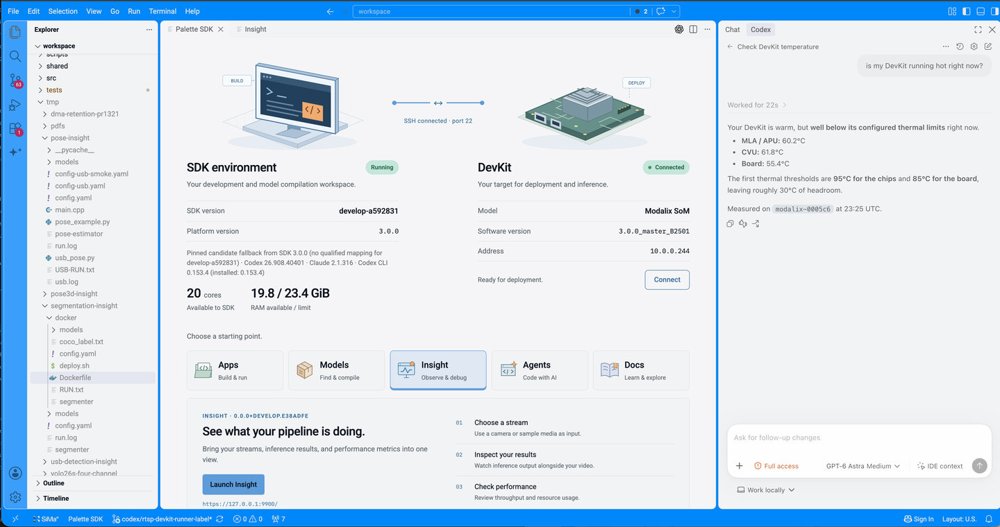
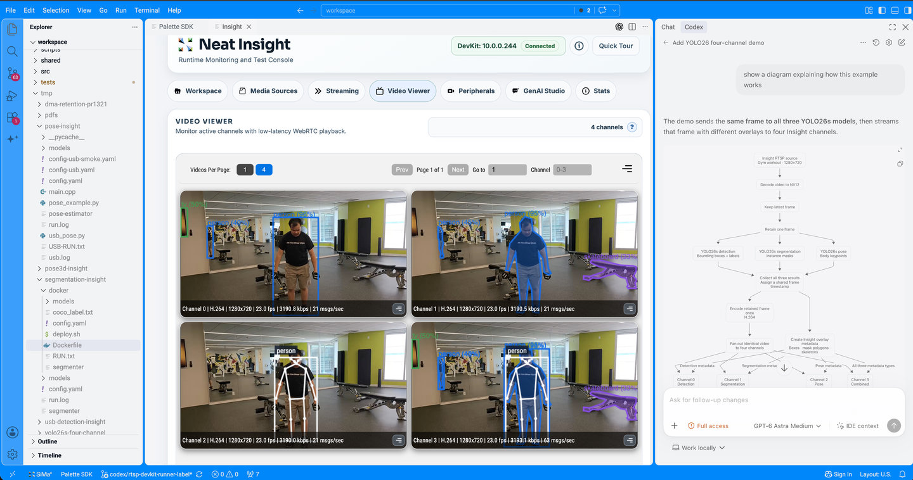
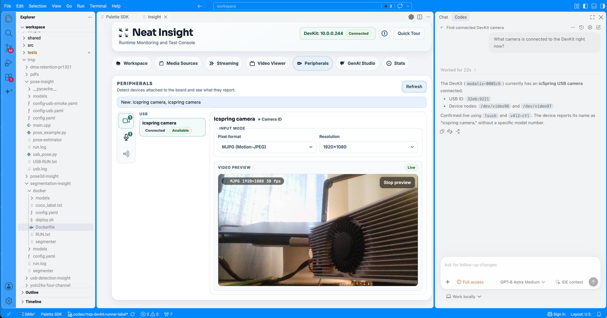
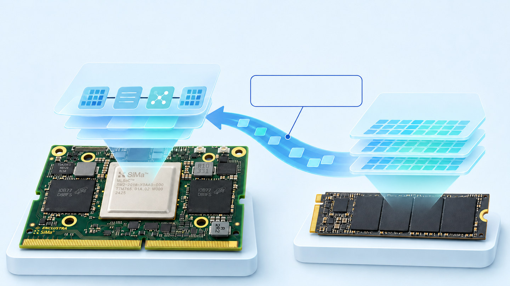

LOCAL STORAGE
Offload embedding data.
Use NVMe embedding offload with the compatible GPT-OSS 20B model. The validated setup uses local PCIe NVMe storage.
NOVEMBER 7, 2026 / RELEASE NOTES
Neat 0.6.1 Insight 0.0.11
Insight now opens inside code-server. Work with your coding agent, run your application, and check vision and GenAI output in the same workspace. Use Chrome, Safari or Edge to access the code-server web interface.
See all bundled component versions in the full release map.
01 / INSIGHT IN YOUR WORKSPACE
Keep your files, coding agent and model output together. Check results in the Insight editor tab without switching to a separate window.

SDK LAUNCHPAD
Check your SDK environment and DevKit connection, then choose Apps, Models, Insight, Agents or Docs. Launch Insight directly into an editor tab.
Confirm your setup, open the tools you need, and work with your coding agent without leaving code-server.

VISION OUTPUT
View detection boxes, segmentation masks and pose keypoints in the Video Viewer. The screenshot shows four channels with separate and combined overlays.
Run your pipeline, inspect the overlays, then ask your coding agent to change the code—all in the same workspace.

GENAI OUTPUT
Test a model in GenAI Studio and inspect its response. See the time to the first token, generation speed and token count below the output.
Try different prompts and check the results while your application code and coding agent stay in view.

GENAI MODELS
Use Settings to see models on the DevKit, check which ones are in use, and load or unload them. Search the catalog for models to download.
Check model size and availability before a test. Switch models from Insight without leaving your development workspace.

SYSTEM STATS
Check temperature, estimated board power, CPU use, memory and network activity in Stats. Export the measurements as CSV for review.
Look for resource pressure while testing your application. Use the charts to guide what you investigate next with your coding agent.

LOCAL PERIPHERALS
Open Peripherals to inspect devices attached to the DevKit. For a detected camera, check its connection, choose an input format and resolution, and preview the image.
Confirm that the camera is detected and its input looks right before testing your vision pipeline. Keep the device view and your coding agent in the same workspace.
Hover for two seconds to magnify. With the image link focused, use arrow keys to move the lens and Escape to dismiss it. Select the image to open the full-size screenshot.
02 / GPT-OSS WITH LLIMA 0.6.1
16 GB Modalix DevKits onlyOffload embedding data to local NVMe.

LOCAL STORAGE
Use NVMe embedding offload with the compatible GPT-OSS 20B model. The validated setup uses local PCIe NVMe storage.
RUNTIME FIX
LLiMa 0.6.1 fixes a memory-allocation issue that could stop large models from loading when the model weights filled the device memory pool.
TESTED CONFIGURATION
Model loading, server warm-up and a response-generation smoke test passed with A16W4 quantization and a 4,096-token context.
03 / NEAT LIBRARY 0.6.1
Resume after input pauses, move tensors efficiently, and read model results correctly.
Explore runtime improvementsAn asynchronous run can resume after a normal input pause. Timed-out model calls clear cached execution state so a late result is not returned for the next call.
Repeated host-to-device transfers reuse buffers, reducing allocation and mapping overhead for NumPy and C++ tensor inputs.
Native inference accepts the full compiled input batch. Affected packed outputs retain their correct tensor types and shapes.
VideoSender removes its fixed 3840 × 2160 raw-input limit. Supported resolutions and frame rates still depend on the encoder backend.
04 / NEAT APPS 0.6.1
Keep models ready, simplify installation, and inspect live results with the updated application examples.
GenAI Studio keeps up to two chat or vision-language models loaded by default, when memory allows. Switch between loaded models without reloading them. Your model limit is kept when you run setup again.
The Apps installer checks your existing setup, skips a matching Neat Library, and offers to install or update Insight. Keep working with the tools you already have when they are compatible.
PatchCore improves live heatmap rendering. The FastFlow sample holds each disc longer so defects are easier to see. SuperPoint now reads an RTSP stream and sends annotated results to Insight.
The high-density detector fixes detection-result parsing and checks each stream separately. A stalled stream is identified instead of being hidden by activity on other streams.
05 / MODEL COMPILER
Fixes for Qwen3.5 performance and Whisper compilation, with the LLiMa 0.6.1 compiler.
QWEN3.5
This release fixes a compiler regression that reduced the tokens per second of compiled Qwen3.5 models.
What to do: Recompile your Qwen3.5 models with Model Compiler 3.0.0.1. Existing compiled models keep the behavior of the compiler that built them.
WHISPER
The LLiMa 0.6.1 compiler changes how Whisper GELU activations are compiled. Reference tests showed lower numerical error. It also fixes the decoder-cache input order, which could corrupt transcription after the first word.
What to do: Recompile Whisper models to get the activation change. For packages affected by the cache-order issue, regenerate and replace the decoder-cache ELF. The encoder, initialization and decoder pre/post ELFs can be kept.
Compiler graph checks passed. Full transcription correctness on hardware has not been established for every affected model. Existing working Whisper packages already use the expected cache input order.
PREVIOUS RELEASE
Read the existing feature story, demos and benchmarks.